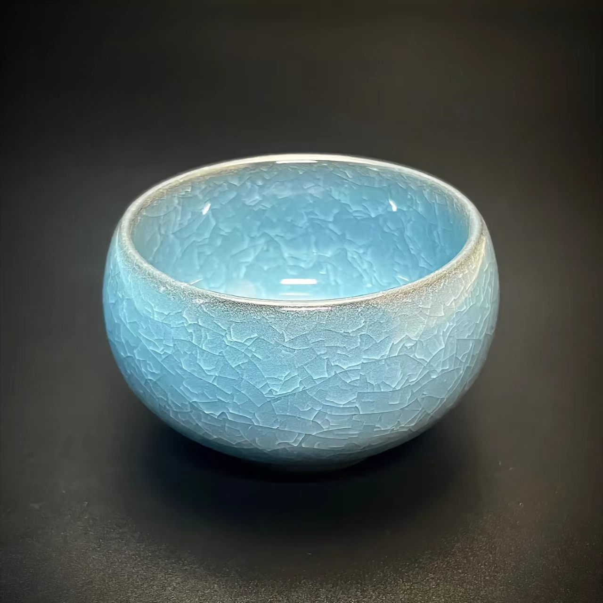

冰裂纹瓷器
浙江龙泉 · 国家级非物质文化遗产

一、技艺简介
冰裂纹瓷器是龙泉青瓷中的珍品，釉面呈现自然开裂的纹片，纹路如冰似玉、层叠交错，浑然天成、妙趣横生。冰裂纹瓷器以"金丝铁线""冰裂纹片"著称于世，被誉为"瓷中君子"。
冰裂纹是瓷器釉面的一种自然开裂现象，本是烧制过程中的"缺陷"，被龙泉匠人发现并利用，化腐朽为神奇，成为青瓷艺术中最具辨识度的美学符号。
二、历史渊源
冰裂纹瓷器起源于北宋时期的浙江龙泉窑。龙泉匠人在烧制青瓷时偶然发现釉面自然开裂的纹片，经过反复试验，掌握了冰裂纹的控制技法。南宋时期，冰裂纹成为龙泉青瓷的代表性品种，受到皇室和文人的珍爱。
2006年，龙泉青瓷烧制技艺被列入国家级非物质文化遗产名录。
三、主要特征
- 金丝铁线：裂纹线条呈金色或铁色，纵横交错，浑然天成
- 冰裂如画：釉面纹片层层叠叠，如同冰面自然裂开，错落有致
- 青釉温润：龙泉青瓷特有的粉青、梅子青釉色，温润如玉
- 自然天成：冰裂纹纹理完全自然形成，每一件作品独一无二
四、制作工序
- 选料：精选龙泉本地瓷土和天然釉料
- 成型：手工拉坯或注浆成型，修坯精细
- 素烧：首次入窑低温烧制，使坯体坚硬
- 施釉：多次施釉，釉层厚薄均匀
- 釉烧：高温还原焰烧制，釉面自然开裂
- 出窑：冷却后呈现冰裂纹片，金丝铁线若隐若现
五、图案寓意
- 冰裂纹：象征坚贞不屈、冰清玉洁
- 金丝铁线：象征刚柔并济、阴阳调和
- 青釉色泽：象征生机勃勃、自然之美
- 自然天成：象征道法自然、返璞归真
"冰裂纹之美，在于'缺陷'中的天趣。一纹一裂，皆是造化之功；一冰一玉，尽显匠人之心。"